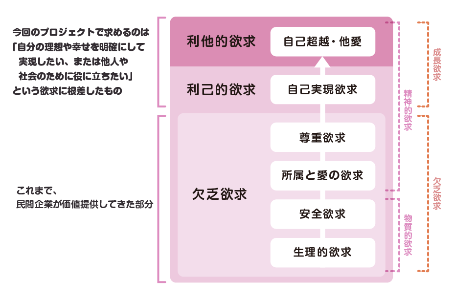

マズローの欲求って知ってますか？このプロジェクトにあたって前提条件を出されました。

このプロジェクトの発案者によると、次の段階に来る欲求は利他的欲求だそうです。
確かにそうかもしれません。。。このように、次の段階の欲求を満たす物・ことの開発が最近ではよく求められています。
私の考え
確かに、次の欲求を満たすものについて考えることは大事ですが、ほとんどの欲求が満たされた中で新しいアイディアを作ることってとっても大変じゃないでしょうか。
だから私は、便利になっていく時代の流れとともに、人間の潜在的な欲求？みたいなものはいつか無くなるのではないかと思っていました。
もし、この利己的欲求が満たされたら、次は何の欲求が生まれるのか自分なりに考えてみました。次に来るのは、便利になった生活の中で新たな問題が出てくる、それを解決する欲求だと思います。
つまりは便利になったサービスを利用しすぎて全体的にみると地球温暖化に影響を与えていたり、、、
例えると、車です。車は便利な物として進出し、今では多くのユーザーがいます。表面上では便利な物として発展してきました。そしてユーザーが増えるほど車の価値は高まってきました。
ですが徐々に、新たな問題も起き始めました。それは、車が世の中に深く浸透していく過程でCO2の排出がエグいことになってきたという点です。
便利な物を作っていくというのはいいことばかりではないのです。日常をよく考察してみるとたくさんある気がします。
満たされた中にさらに満たすことを求めて、少ない頭でアイディアを創造するのもいいですが、満たされた生活の中で出てくる何らかのディレンマを見つめ直してみるのもいいのではないでしょうか。そして、具体的に今後求められてくる物はそれらの問題を解決する提案だと思われます！！